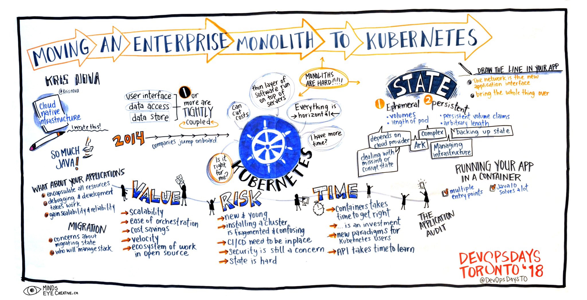
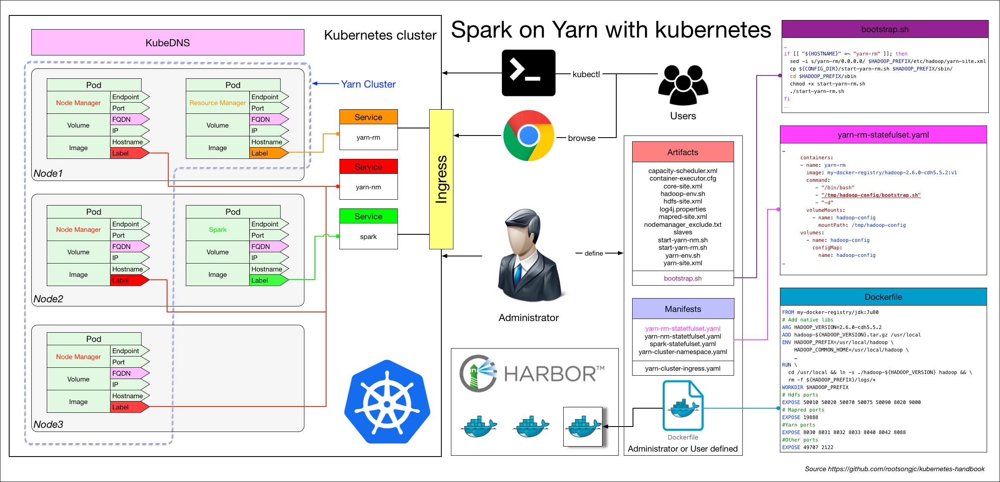
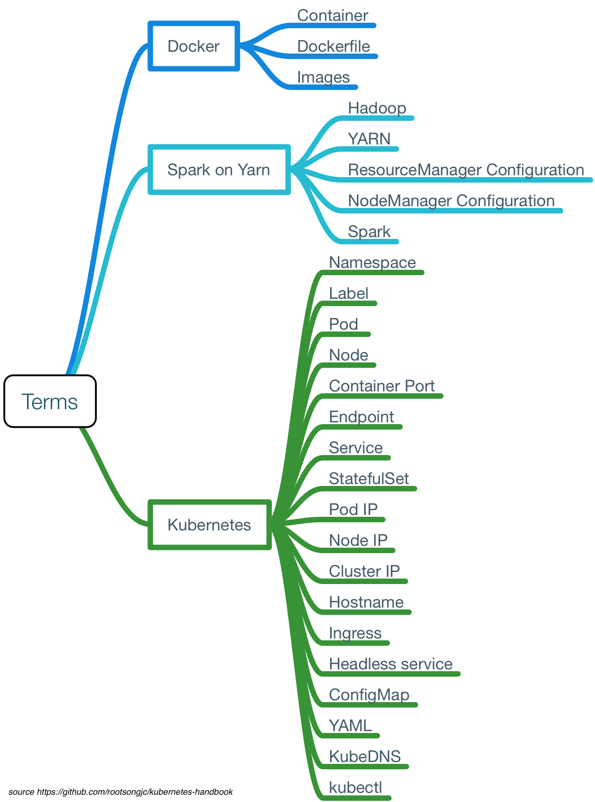

迁移传统应用到Kubernetes
Table of Contents
接下来说明如何将已有的应用程序尤其是传统的分布式应用程序迁移到 kubernetes 中 如果该类应用程序符合云原生应用规范（如12因素法则）的话，那么迁移会比较顺利，否则会遇到一些麻烦甚至是阻碍
下图是将单体应用迁移到云原生的步骤：

接下来将以 Spark on YARN with kubernetes 为例来说明 该例子足够复杂也很有典型性，了解了这个例子可以帮助大家将自己的应用迁移到 kubernetes 集群上去
下图即整个架构的示意图，所有的进程管理和容器扩容直接使用 Makefile：

注意： 该例子仅用来说明具体的步骤划分和复杂性
术语
对于为曾接触过 kubernetes 或对云平台的技术细节不太了解的人来说，如何将应用迁移到 kubernetes 中可能是个头疼的问题 在行动之前有必要先了解整个过程中需要用到哪些概念和术语，有助于大家在行动中达成共识
过程中可能用到的概念和术语初步整理如下：

为了讲解整改过程和具体细节，所有操作都是通过命令手动完成，不使用自动化工具 当充分了解到其中的细节后可以通过自动化工具来优化该过程，以使其更加自动和高效，同时减少因为人为操作失误导致的迁移失败
迁移

整个迁移过程分为如下几个步骤：
将原有应用拆解为服务
不是一上来就开始做镜像，写配置，而是应该先梳理下要迁移的应用中有哪些可以作为服务运行，哪些是变的，哪些是不变的部分
服务划分的原则是 最小可变 原则，这个同样适用于镜像制作，将 服务中不变的部分 编译 到 同一个镜像 中。对于像 Spark on YARN 这样复杂的应用，可以将其划分为三大类服务：
- ResourceManager
- NodeManager
- Spark client
制作镜像
根据拆解出来的服务，需要制作两个镜像：
- Hadoop
- Spark (From hadoop docker image)
因为运行的是 Spark on YARN，因此 Spark 依赖与 Hadoop 镜像，所以在 Spark 的基础上包装了一个 web service 作为服务启动
Hadoop YARN 的 Dockerfile 参考如下配置：
FROM my-docker-repo/jdk:7u80 # Add native libs ARG HADOOP_VERSION=2.6.0-cdh5.5.2 ## Prefer to download from server not use local storage ADD hadoop-${HADOOP_VERSION}.tar.gz /usr/local ADD ./lib/* /usr/local/hadoop-${HADOOP_VERSION}/lib/native/ ADD ./jars/* /usr/local/hadoop-${HADOOP_VERSION}/share/hadoop/yarn/ ENV HADOOP_PREFIX=/usr/local/hadoop \ HADOOP_COMMON_HOME=/usr/local/hadoop \ HADOOP_HDFS_HOME=/usr/local/hadoop \ HADOOP_MAPRED_HOME=/usr/local/hadoop \ HADOOP_YARN_HOME=/usr/local/hadoop \ HADOOP_CONF_DIR=/usr/local/hadoop/etc/hadoop \ YARN_CONF_DIR=/usr/local/hadoop/etc/hadoop \ PATH=${PATH}:/usr/local/hadoop/bin RUN \ cd /usr/local && ln -s ./hadoop-${HADOOP_VERSION} hadoop && \ rm -f ${HADOOP_PREFIX}/logs/* WORKDIR $HADOOP_PREFIX # Hdfs ports EXPOSE 50010 50020 50070 50075 50090 8020 9000 # Mapred ports EXPOSE 19888 #Yarn ports EXPOSE 8030 8031 8032 8033 8040 8042 8088 #Other ports EXPOSE 49707 2122
镜像制作过程中不需要在 Dockerfile 中指定 Entrypoint 和 CMD，这些都是在 kubernetes 的 YAML 文件中指定的
准备应用的配置文件
因为只制作了一个 Hadoop 的镜像，而需要启动两个服务，这就要求在服务启动的时候必须加载不同的配置文件 现在准备两个服务中需要同时用的的配置的部分
YARN 依赖的配置在 artifacts 目录下，包含以下文件：
bootstrap.sh capacity-scheduler.xml container-executor.cfg core-site.xml hadoop-env.sh hdfs-site.xml log4j.properties mapred-site.xml nodemanager_exclude.txt slaves start-yarn-nm.sh start-yarn-rm.sh yarn-env.sh yarn-site.xml
其中作为 bootstrap 启动脚本的 bootstrap.sh 也包含在该目录下
Kubernetes YAML 文件
根据业务的特性选择最适合的 kubernetes 的资源对象来运行 因为在 YARN 中 NodeManager 需要使用主机名向 ResourceManger 注册，所以需要沿用 YARN 原有的服务发现方式 使用 headless service 和 StatefulSet 资源
所有的 Kubernetes YAML 配置文件存储在 manifest 目录下，包括如下配置：
- yarn-cluster 的 namespace 配置
- Spark、ResourceManager、NodeManager 的 headless service 和 StatefulSet 配置
- 需要暴露到 kubernetes 集群外部的 ingress 配置（ResourceManager 的 Web）
kube-yarn-ingress.yaml spark-statefulset.yaml yarn-cluster-namespace.yaml yarn-nm-statefulset.yaml yarn-rm-statefulset.yaml
Bootstrap 脚本
Bootstrap 脚本的作用是在 启动 时根据 Pod 的环境变量 、 主机名 或其他可以区分不同 Pod 和将启动角色的变量来 修改 配置文件 和 启动 服务应用
该脚本同时将原来 YARN 的日志使用 stdout 输出，便于使用 kubectl logs 查看日志或其他日志收集工具进行日志收集 启动脚本 bootstrap.sh 跟 Hadoop 的配置文件同时保存在 artifacts 目录下 该脚本根据 Pod 的主机名，决定如何修改 Hadoop 的配置文件和启动何种服务
bootstrap.sh 文件的部分代码如下：
if [[ "${HOSTNAME}" =~ "yarn-nm" ]]; then sed -i '/<\/configuration>/d' $HADOOP_PREFIX/etc/hadoop/yarn-site.xml cat >> $HADOOP_PREFIX/etc/hadoop/yarn-site.xml <<- EOM <property> <name>yarn.nodemanager.resource.memory-mb</name> <value>${MY_MEM_LIMIT:-2048}</value> </property> <property> <name>yarn.nodemanager.resource.cpu-vcores</name> <value>${MY_CPU_LIMIT:-2}</value> </property> EOM echo '</configuration>' >> $HADOOP_PREFIX/etc/hadoop/yarn-site.xml cp ${CONFIG_DIR}/start-yarn-nm.sh $HADOOP_PREFIX/sbin/ cd $HADOOP_PREFIX/sbin chmod +x start-yarn-nm.sh ./start-yarn-nm.sh fi if [[ $1 == "-d" ]]; then until find ${HADOOP_PREFIX}/logs -mmin -1 | egrep -q '.*'; echo "`date`: Waiting for logs..." ; do sleep 2 ; done tail -F ${HADOOP_PREFIX}/logs/* & while true; do sleep 1000; done fi
从这部分中代码中可以看到，如果 Pod 的主机名中包含 yarn-nm 字段则向 yarn-site.xml 配置文件中增加如下内容：
<property> <name>yarn.nodemanager.resource.memory-mb</name> <value>${MY_MEM_LIMIT:-2048}</value> </property> <property> <name>yarn.nodemanager.resource.cpu-vcores</name> <value>${MY_CPU_LIMIT:-2}</value> </property>
其中 MY_MEM_LIMIT 和 MY_CPU_LIMIT 是 kubernetes YAML 中定义的环境变量，该环境变量又是引用的 Resource limit
所有的配置准备完成后，执行 start-yarn-nm.sh 脚本启动 NodeManager
如果 kubernetes YAML 中的 container CMD args 中包含 -d 则在后台运行 NodeManger 并 tail 输出 NodeManager 的日志到标准输出
ConfigMaps
将 Hadoop 的配置文件和 bootstrap 脚本作为 ConfigMap 资源保存，用作 Pod 启动时挂载的 volume：
kubectl create configmap hadoop-config \ --from-file=artifacts/hadoop/bootstrap.sh \ --from-file=artifacts/hadoop/start-yarn-rm.sh \ --from-file=artifacts/hadoop/start-yarn-nm.sh \ --from-file=artifacts/hadoop/slaves \ --from-file=artifacts/hadoop/core-site.xml \ --from-file=artifacts/hadoop/hdfs-site.xml \ --from-file=artifacts/hadoop/mapred-site.xml \ --from-file=artifacts/hadoop/yarn-site.xml \ --from-file=artifacts/hadoop/capacity-scheduler.xml \ --from-file=artifacts/hadoop/container-executor.cfg \ --from-file=artifacts/hadoop/hadoop-env.sh \ --from-file=artifacts/hadoop/log4j.properties \ --from-file=artifacts/hadoop/nodemanager_exclude.txt \ --from-file=artifacts/hadoop/yarn-env.sh kubectl create configmap spark-config \ --from-file=artifacts/spark/spark-bootstrap.sh \ --from-file=artifacts/spark/spark-env.sh \ --from-file=artifacts/spark/spark-defaults.conf
所有的配置完成后，可以使用 kubectl 命令来启动和管理集群了
如果编写了 Makefile，可以直接使用该 Makefile 封装的命令实现部分的自动化
| Next：StatefulSet | Previous：开发 | Home：应用 |